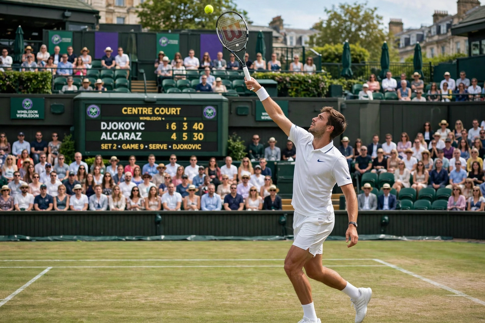

From Wikipedia, the free encyclopedia
| Tennis | |
|---|---|
 A tennis player serving on a grass court at Wimbledon | |
| Highest governing body | International Tennis Federation (ITF) |
| First played | 19th century, Birmingham, England |
| Type | Racket sport |
| Equipment | Ball, racket, net |
| Venue | Tennis court (grass, clay, hard) |
| Olympic | 1896–1924; 1988–present |
Tennis is a racket sport played individually against a single opponent (singles) or between two teams of two players each (doubles). Each player uses a tennis racket strung with a cord to strike a hollow rubber ball covered with felt over or around a net and into the opponent's court. The object is to manoeuvre the ball so the opponent cannot play a valid return.
The modern game originated in Birmingham, England, in the late 19th century as "lawn tennis", from the older game of real tennis played in France since the 12th century. Major Walter Clopton Wingfield is credited with popularising the modern version in 1873. The first Championships at Wimbledon were held in 1877, making it the oldest tennis tournament in the world.
The four Grand Slam tournaments — the Australian Open (hard), the French Open at Roland Garros (clay), Wimbledon (grass) and the US Open (hard) — are the sport's most prestigious events. The leading players of the modern era are the "Big Three" of Roger Federer, Rafael Nadal and Novak Djokovic; Djokovic holds the men's record of 24 Grand Slam singles titles. In the women's game, Serena Williams won 23 major singles titles in the Open Era, behind only Margaret Court's 24 overall. The professional tours are run by the ATP (men) and WTA (women).
Points progress love, 15, 30, 40, game; six games (by two) win a set, with a tiebreak at six games all in most events. Matches are best of three sets, or best of five in men's Grand Slam singles.
Categories: Tennis | Racket sports | Ball games